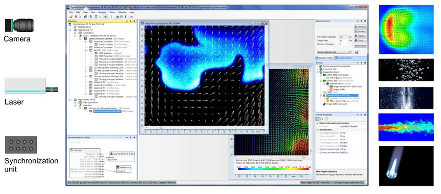

Equipment
Equipment for flow visualization and measurement
- Dantec Particle Image Velocimetry (PIV) algorithm
- Nd-Yag laser (Innolas)
- SpitLight PIV Compact 400-10
- Dual Osc/Amp with 2 * 180mJ at 532nm
- Continous laser
- 5W DPSS laser, 532nm
- High-speed camera
- SpeedSense M310 Camera 1MP 3260 fps, 6GB (Dantec)
- Sensor resolution: 1280 px * 800 px
- Hot-wire anemometer (TSI)
- IFA300, 2-Channel
- Manometer
